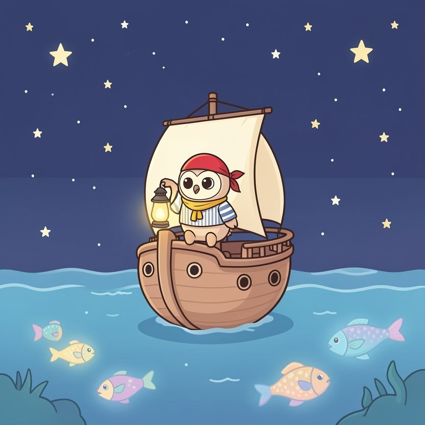

Titistoire › Les Étoiles (3-6 ans)
Plume et la toute petite voix
Une histoire de Plume la chouette pour parler de : oser parler.

▶ Écouter et regarder l'histoire
Gratuit, sans inscription : la voix lit, le texte suit mot à mot, les images tournent comme dans un album.
Le texte de l'histoire
Sur La Coquille, quand la nuit tombe, tout l'équipage s'endort. Tout l'équipage, sauf Plume, perchée en haut du mât avec sa lanterne. Une chouette, la nuit, ça voit tout.
De là-haut, elle voit les poissons qui scintillent sous la coque. Elle voit les étoiles filantes rayer le ciel. Et elle voit même la capitaine se relever sur la pointe des pattes pour finir le gâteau.
Plume voit tout. Mais elle n'en souffle pas un mot. Sa voix est si petite, si fluette, qu'elle a peur qu'on ne l'entende pas. Ou pire : qu'on l'entende, et qu'on se moque.
Le jour, sur le pont, c'est à qui parlera le plus fort. La capitaine Mirabelle tonne. Les matelots braillent leurs chansons. Sardine couine. Quel tintamarre ! On ne s'entendrait pas éternuer.
Plume lève une aile. « Hou… excusez-moi… je crois que la corde est mal attachée… » Personne ne l'entend. Flap ! La voile s'affale sur le cuisinier. Seuls dépassent un groin et une louche.
« Il fallait le dire ! » ronchonnent les matelots. « Je l'ai dit… », murmure Plume, la tête basse. Mais ça non plus, personne ne l'entend.
Une nuit, le brouillard tombe. Épais, gris, cotonneux. Il avale la mer, il avale les étoiles. Les matelots ronflent. Plume se hisse dans le nid de pie et écarquille ses grands yeux.
Et là, au milieu de tout ce gris, elle aperçoit une ombre. Une grande ombre noire, sans une seule lanterne, qui glisse sur l'eau sans un bruit. Un bateau !
À l'avant se tient un chat au sourire sournois, un bandeau sur l'œil. Griffard ! Ce chenapan vient chiper le trésor pendant que tout le monde dort.
Le cœur de Plume tambourine. Vite, elle dévale le mât et volette jusqu'au hamac de la capitaine. « Hou… capitaine… il y a un… », chuchote-t-elle au creux de son oreille.
« Rrrron… pchiii… » La capitaine se retourne sans ouvrir un œil. Plume essaie avec Nestor. « Hou… s'il te plaît… » Le gros ours sourit aux anges, sans se réveiller. Il rêve de miel.
Sur le pont, Plume se fige. Le bateau noir est tout près, maintenant. Si près qu'elle entend les griffes de Griffard racler le bois. Scriiitch.
Plume tremble de toutes ses plumes. Que faire ? Sonner la grosse cloche d'alarme ? Bien trop lourde pour ses ailes. Battre le tambour ? Elle n'a pas de baguettes.
Il ne reste que sa voix. Sa toute petite voix. Celle qu'on n'entend jamais. Plume pose une aile sur sa gorge. « Je n'y arriverai pas », songe-t-elle.
Une patte grise se pose sur le bord du bateau. Puis une autre. Et un œil jaune luit dans le brouillard, rond comme une pièce d'or.
Alors Plume s'envole tout en haut du mât. Elle gonfle ses plumes, elle gonfle sa poitrine. Puis elle pense à tout ce qu'elle n'a jamais osé dire, à tous ces mots restés coincés dans sa gorge, et elle met tout ça dans son bec.
« HOUUUUUUUUU ! AUX VOLEURS ! HOUUUUUUU ! » Son cri roule dans le brouillard comme une corne de brume. Plume en a les yeux tout ronds : elle ne savait pas qu'elle avait tout ça en elle.
Patatras ! La capitaine culbute de son hamac, les pattes en l'air. Nestor bondit. Sardine brandit une fourchette. « ALERTE ! TOUT LE MONDE SUR LE PONT ! »
Griffard n'a jamais eu aussi peur de sa vie. Un fantôme hurle dans les voiles, il en est sûr ! Ses griffes lâchent prise et… plouf ! Le voilà qui regagne son bateau à la nage, penaud, trempé jusqu'aux moustaches.
« Qui a donné l'alerte ? s'étonne la capitaine en levant sa lanterne. Quelle voix ! Quel coffre ! » On se regarde, on hausse les épaules. Et là-haut, sur le mât, une petite chouette lève timidement une aile.
« C'est moi… » Ce n'est qu'un murmure. Mais cette fois, un grand silence se pose sur le pont, et tout le monde l'entend.
Depuis cette nuit-là, Plume est la vigie officielle de La Coquille. Nul besoin de crier : dès qu'elle lève l'aile, les matelots s'arrêtent net de chanter et tendent l'oreille.
« La corde est mal attachée. » « Il y a un banc de sable à gauche. » « Capitaine, c'est encore vous qui avez fini le gâteau. » Mirabelle rougit, des miettes aux moustaches.
Sa voix est toujours petite et douce. Mais à présent, on se penche pour l'écouter. Et certaines nuits de lune, tout en haut du mât, elle ferme les yeux et pousse un grand « Houuuu ! » pour personne. Juste pour le plaisir.